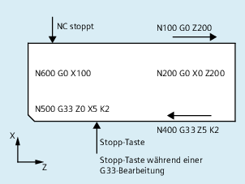

Zur Definition eines bedingt unterbrechbaren Bereichs im Teileprogramm (Stop-Delay-Bereich) dienen die vordefinierten Prozeduren DELAYFSTON und DELAYFSTOF.
| Hinweis |
|
In Synchronaktionen sind DELAYFSTON und DELAYFSTOF nicht zulässig! |
| DELAYFSTON | |
| ... | |
| DELAYFSTOF |
| Beginn eines Stop-Delay-Bereichs definieren | |
Alleine im Satz: | ja | |
| Ende eines Stop-Delay-Bereichs definieren | |
Alleine im Satz: | ja | |
In einer Schleife wird folgender Programmblock wiederholt:
| Programmcode | |
|---|---|
| ... | |
| N99 MY_LOOP: | |
| N100 G0 Z200 | |
| N200 G0 X0 Z200 | |
| N300 DELAYFSTON | |
| N400 G33 Z5 K2 M3 S1000 | |
| N500 G33 Z0 X5 K3 | |
| N600 G0 X100 | |
| N700 DELAYFSTOF | |
| N800 GOTOB MY_LOOP | |
| ... |
Im folgenden Bild ist erkennbar, dass der Anwender im Stop-Delay-Bereich "Stopp" drückt, und die NC beginnt den Bremsvorgang außerhalb des Stop-Delay-Bereichs, d. h. im Satz N100. Damit kommt die NC im vorderen Bereich von N100 zum Halten.
Siehe auch:
Stop-Delay-Bereiche definieren (DELAYFSTON, DELAYFSTOF): Weitere Informationen